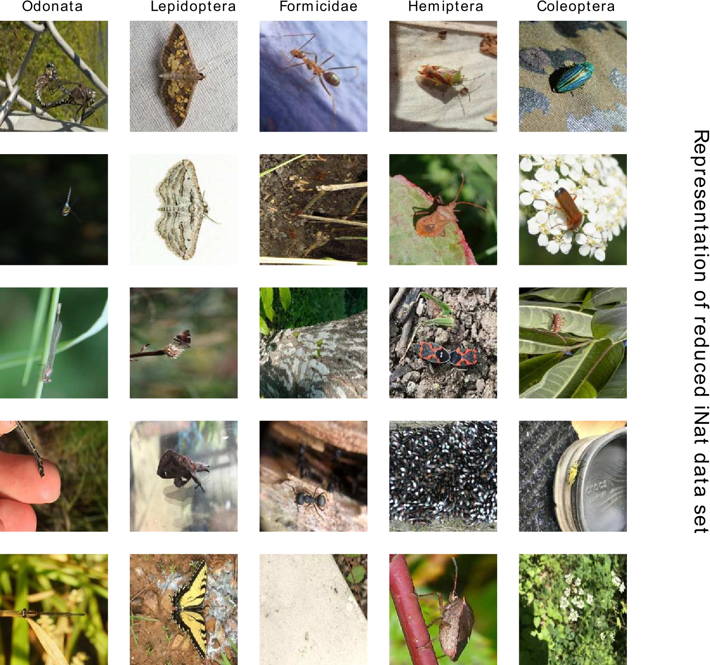
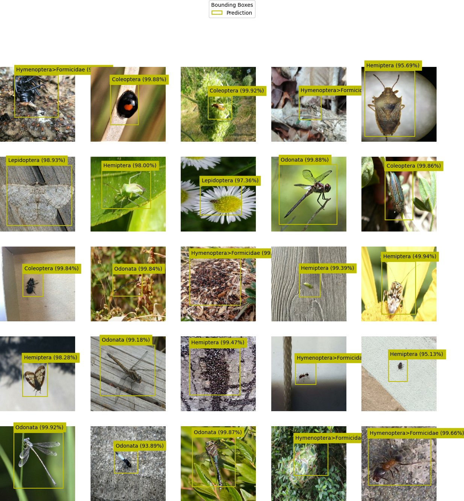
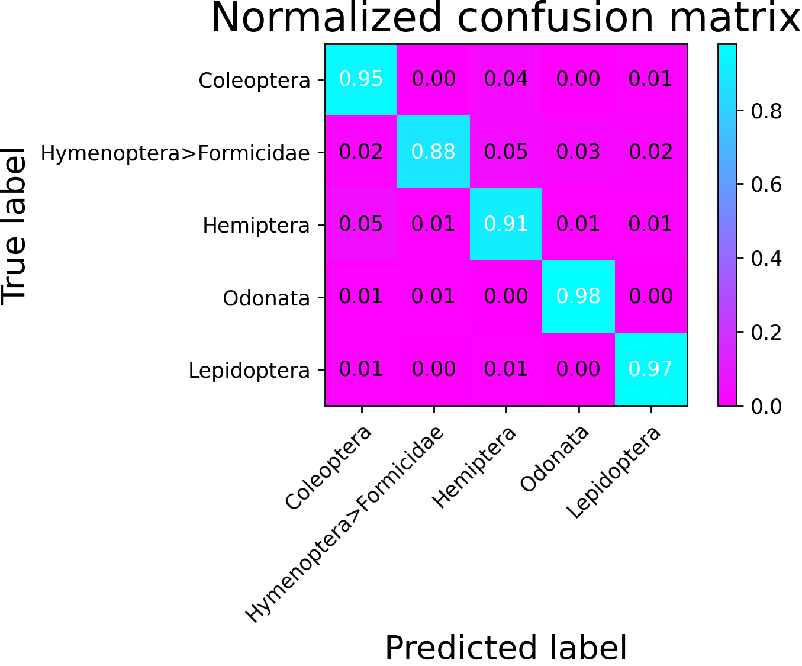

iNet¶
Thesis: Machine Learning Methods for Localization and Classification of Insects in Images¶
A look into ML methods for single object detection, solving the tasks of insect genera classification and bounding box regression, individually as well as simultaneously.
Abstract¶
This thesis has been written in the citizen science project KInsekt at the Berliner Hochschule für Technik. Its main objective is to investigate different Machine Learning techniques for the localization and classifi- cation of insect orders, namely ”Coleoptera”, ”Hymenoptera, Formici- dae”, ”Lepidoptera”, ”Hemiptera” and ”Ordonata”, based on image files. The accompanying code repository (https://gitlab.com/kinsecta/ml/thesisphilipp and https://github.com/philsupertramp/inet) contains software written in Python (version 3.6.9), de- veloped using the libraries numpy, tensorflow, keras, keras-tuner and scikit-learn. The code has been written in the attempt to be easily extendable or changeable, to e.g. append the list of available classification classes. All used algorithms and ”random” generated numbers are seeded, using the seed 42. The Machine Learning model is supposed to run efficiently on a small computer, such as the RaspberryPi, therefore widely used architectures can not simply be used. This thesis contains a brief description of the Machine Learning pipeline from data collection, and preparation to preprocessing of the data set and finally using the resulting data set to train different models and archi- tectures. At the end, the best models, based on predefined metrics, will be chosen and its performance against state-of-the-art architectures, in- cluding YOLO, evaluated. The results of this evaluation will then reveal that custom tailored architectures perform worse on the given task, when compared to SotA architectures.
Description¶
This project contains all content and things around the underlying thesis.
The submitted paper can be found in ./docs/thesisphilipp.pdf.
The repository contains the ./docs directory holding research and the theoretical part of the paper.
The accommodating code to the paper and the webapp is located in ./inet.
For more details consult the documentation pages.
Visuals¶
{kind=link}
Data Augmentation¶

Predictions¶
Classification:
===================================
Accuracy: 0.916
f1 score: 0.9167668857681328
Localization:
===================================
GIoU: 0.4361618
 
Installation¶
Prerequesites:¶
python >= 3.8, virtualenv, optionaldockerset environment variables according to
./scripts/mount_directories.sh
Usage¶
Datasets¶
To optain the data set, either contact me via gh issue or through any other channel mentioned on my gh page, or by following the steps below.
recreate a pre-labelled training set¶
Recreate the data set from iNaturalist Competition 2021¶
You can find the iNaturalist Competition Data set at the bottom of this page.
Download the “Train” data set
#. Extract subset for only “insecta” classes (place it under mnt/KInsektDaten/data/iNat/train_Insecta)
#.
Run
$ python -m scripts.reuse_labels bounding-boxes-2022-02-12-14-33.json mnt/KInsektDaten/data/iNat/train_Insecta/ data/iNat/storage#### generate a training set:
To generate a dataset from the source
mnt/KInsektDaten/data/iNat/train_Insecta/:$ python -m scripts.preselect_files --seed 42 -g 20 -s 25 -rng -l ../mnt/KInsektDaten/data/iNat/train_Insecta/ ../data/iNat/
for more options see
-h.Upload the files within the (default) target directory
./data/iNat/storageinto “Label-Studio” and annotate bounding boxes.
optionally Launch LabelStudio
$ docker run -it -p 8080:8080 -v $PWD/data/iNat:/label-studio/data -e LABEL_STUDIO_LOCAL_FILES_SERVING_ENABLED=true -e LABEL_STUDIO_LOCAL_FILES_DOCUMENT_ROOT=/label-studio/data heartexlabs/label-studio:latest
Create labels for image files
Export the labels from LStudio
Generate file structure for train, test and validation sets by running .. code-block:: shell
$ python -m scripts.process_files -input_directory data/iNat/storage -output_directory data/iNat/data -test 0.1 -val 0.2 bounding-boxes-2022-02-12-14-33.json
Generate cropped dataset for classification task .. code-block:: shell
$ python -m scripts.generate_cropped_dataset data/iNat/
Inference tests¶
To test inference of trained models run scripts from the ./tests directory.
test_tf_architectures.py¶
Executes inference tests on pretrained optimized instances of
IndependentModelTwoStageModelSingleStageModel
test_tf_lite_architectures.py¶
Executes inference tests on TFLite compatible versions of pretrained optimized instances of
IndependentModelTwoStageModelSingleStageModel
Support¶
In case you need help setting up the project or run into issues please create a ticket within the repositories issue tracker
License¶
Unless marked differently all code and content in this repository is published under GNU GPL-3.0.
Project status¶
First release is v1.0.0